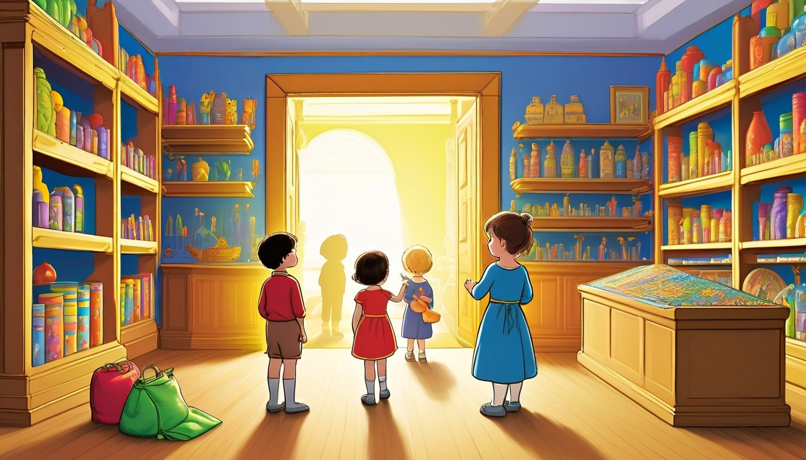

Sixteen paper cards help writers create fictional story characters from made-up paper pocket items, wants, worries, actions, and voices.
Audience: Families, homeschool groups, tutors, and adult-led writing tables for writers ages 7-11.
Format: 16 printable character cards plus adult guide tools, character routines, take-home character slips, and optional share prompts
Family-safe printable writing pages for adult-led, offline story practice.
$47
Included
16 printable coat-pocket character cards
Adult setup guide
Fictional character safety notes
Pretend paper pocket coaching moves
Privacy and family handoff notes
Pack reset notes
Six adult-led character routines
Ten take-home character slips
Eight optional share prompts
Provider-ready PDF and ZIP artifact
Adult guide
Character coaching
Before the session
Print the character cards, pocket label, and slips before the session; keep every piece paper-only and adult-led.
Use a folded envelope or printed pouch labeled Pretend Paper Coat Pocket; never use or inspect real clothing.
Set out pencils, blank cards, and scrap paper for invented roles, invented objects, and story lines only.
Remind writers that every character is made up, with no real names, real places, or private details.
Frame the goal as one playful paper character plus one story line, not a finished assignment.
Paper character setup
Place the blank character cards inside the pretend paper coat pocket and let the adult handle the pocket between turns.
On the first card, write an invented character role with no real person attached: ____________________.
On the second card, write one harmless pretend pocket object for that character: ____________________.
On the third card, write one tiny make-believe wish or question for the character: ____________________.
Clip the three cards together so the writer has a paper character bundle before drafting.
Story character coaching
Ask what the invented character wants on the story page, then write the want in one short phrase: ____________________.
Ask what the paper pocket object helps the character try, then write the helpful detail: ____________________.
Coach one visible trait that appears through action, such as careful, bold, or curious: ____________________.
Guide the writer to add one line the character could say in a pretend scene: ____________________.
If the idea turns toward real people or real places, redirect to a fictional role and setting: ____________________.
Privacy and safety notes
Do not ask writers to describe actual pockets, clothing, rooms, routes, schools, homes, relatives, or private places.
Use fictional role labels such as cloud gardener, moon baker, paper inventor, or tiny museum guide.
If a real name appears, replace it with a made-up character name: ____________________.
If a private location appears, replace it with a pretend story place: ____________________.
Keep all sharing local to the paper session and limited to invented words, sketches, or story lines.
Family handoff
Send only the completed paper cards and slips, with no request for personal details or real-life descriptions.
Invite the adult reader to ask for one favorite invented word from the card: ____________________.
Suggest a short family read-through of one story line, with the writer choosing what to read: ____________________.
Keep the pretend paper coat pocket label with the cards so the theme stays fictional and paper-based.
Use the reset card if a writer wants a fresh fictional role instead of revising a real-life detail.
Reset
Collect loose cards, remove any real names or private-place details, and keep only fictional paper pieces.
Return unused blanks to the pretend paper coat pocket for the next adult-led round.
Invite one fresh invented role to restart the set: ____________________.
Store the pack flat with pencils and blank slips for the next paper session.
Use one paper character card at a time. Keep every choice broad, invented, and screen-free.
World menu
Sixteen character-card worlds
Pick a world image, then create one fictional character from a pretend paper pocket item.
Ages 6-8
Moon Muffin Market
Ages 6-8
Puddle Planet Post Office
Ages 7-9
Buttonwood Library Train
Ages 7-9
Button Bakery Map Mix-Up
Ages 7-8
Teacup Town Weather Window
Ages 7-9
Pocket Park Notice Board
Ages 7-9
Spoon Ferry Lunchbox Harbor
Ages 7-9
Acorn Avenue Errand Office
Ages 8-10
Seed Library Map Room
Ages 8-10
Rain Gauge Railway
Ages 8-10
Moss Message Observatory
Ages 8-10
Tidepool Timekeepers Lab
Ages 10-11
Revision River Ferry

Ages 10-11
Clue Label Tower Museum
Ages 10-11
Compass Craft Academy
Ages 10-11
Binding Day Boardwalk
character routines
Choose the paper character rhythm
Paper Pocket Role Pull
Starting a fictional character without using real identity details.
Adult places three blank cards inside the pretend paper coat pocket.
Writer pulls one paper card and writes a made-up role: ____________________.
Writer adds one harmless pretend pocket object for that role: ____________________.
Writer starts a story sentence using the role and object: ____________________.
Button-Size Backstory
Building a tiny character history that stays fictional.
Adult chooses a blank card and labels it Backstory Button.
Writer writes one invented place from a fantasy setting, not a real place: ____________________.
Writer writes one tiny reason the character carries the paper pocket object: ____________________.
Writer turns the reason into one character line: ____________________.
Pocket Object Motive Match
Connecting character wants to a safe story action.
Adult lays out two character cards and two object cards from the paper pocket.
Writer pairs one invented role with one pretend object: ____________________.
Writer writes what the character hopes the object will help with: ____________________.
Writer writes the first try the character makes on the page: ____________________.
Two-Card Character Voice
Practicing dialogue without real conversations or recordings.
Adult picks one role card and one trait card from the pretend paper pocket.
Writer writes an invented character name: ____________________.
Writer writes one short line the character might say in a pretend scene: ____________________.
Adult helps the writer add one action after the line: ____________________.
Trait Turnaround
Showing how a fictional character changes across a story.
Adult gives the writer a Start Trait card and an Ending Trait card.
Writer writes the character's starting trait: ____________________.
Writer writes one paper-pocket object that helps the character practice a new choice: ____________________.
Writer writes the ending trait in a final story line: ____________________.
Character Card Chain
Group or family table play with each person adding only fictional details.
Adult starts the chain with one invented role card: ____________________.
Next writer adds one harmless pretend object card: ____________________.
Next writer adds one made-up wish, question, or problem: ____________________.
Final writer combines the cards into one story opening: ____________________.
Take-home character slips
Finish one story character later
Single paper slip | character role
Moon Button Keeper
Write an invented character who keeps a moon button in the pretend paper pocket: ____________________.
Adult reader asks for one made-up word connected to the button: ____________________.
One short card | character want
Cloud Bakery Helper
Write what a cloud bakery helper wants to fix, make, or find in a pretend scene: ____________________.
Family reader can ask for one gentle action the helper tries: ____________________.
Folded slip | character voice
Tiny Museum Guide
Write one line a tiny museum guide says about an imaginary display: ____________________.
Adult reader can point to a sketch and ask for one invented label: ____________________.
Two-line card | trait through action
Paper Lantern Maker
Write one careful action the paper lantern maker takes on the story page: ____________________.
Family reader asks which trait the action shows: ____________________.
Small card | character detail
Pebble Orchestra Leader
Write one pretend sound the pebble orchestra leader loves: ____________________.
Adult reader asks for one invented instrument name: ____________________.
One paper pocket card | motive
Pocket Signal Sorter
Write why the pocket signal sorter carries a pretend signal token: ____________________.
Family reader asks what the signal token helps with in the story: ____________________.
Sketch plus line | sensory detail
Ribbon Cloud Painter
Sketch a pretend ribbon cloud and write one color or texture word: ____________________.
Adult reader asks for one story sentence about the sketch: ____________________.
Single scene slip | scene action
Clockless Picnic Planner
Write one pretend picnic item the character packs in the paper pocket: ____________________.
Family reader asks what the item does in the story: ____________________.
One character card | character change
Acorn Page Turner
Write how the acorn page turner feels at the start and end of the story: ____________________.
Adult reader asks what choice helped the change happen: ____________________.
One closing slip | story ending
Story Thread Finder
Write one final line where the character uses the pretend pocket object kindly or cleverly: ____________________.
Family reader asks for one favorite invented phrase from the ending: ____________________.
Optional share prompts
Optional: read one invented character name from a paper card: ____________________.
Optional: show one harmless sketch from a card and say one made-up word: ____________________.
Optional: share one pretend pocket object and its story job: ____________________.
Optional: read one character line from the paper slip: ____________________.
Optional: point to a trait card and name the invented action that shows it: ____________________.
Optional: share one fictional place name from the story page: ____________________.
Optional: read the first sentence of a pretend character scene: ____________________.
Optional: trade one blank card with an adult and add a new invented role: ____________________.
Character Card 1 | Ages 6-8 | role name
Moon Muffin Pocket Crumb Keeper
Moon Muffin Market
Adult setup: Adult: Place this card beside a drawn paper coat pocket and choose one market role together, keeping every detail fictional: ____________________.
With your adult, fill the blanks to make a market character who belongs on the paper card: ____________________.
Character name
Name prompt: Give the character a made-up market name or role label: ____________________.
Pocket item
Paper pocket item: Choose one pretend paper-pocket item the character carries, like a moon crumb tag or tiny tray ticket: ____________________.
Want clue
Want prompt: What gentle thing does the character want at the Moon Muffin Market? ____________________.
Worry clue
Worry prompt: What small, story-sized worry makes the character pause? ____________________.
Action clue
Action prompt: Write one helpful action the character tries next: ____________________.
Voice choice
Voice prompt: Write one sentence that sounds like this character speaking on paper: "____________________."
Revise character
Revise character: Add one detail that makes the character less plain and more moon-market specific: ____________________.
Quiet option: Adult points to the paper pocket item; writer copies one character word: ____________________. Take-home line: Make one new paper-pocket character from a pretend market clue: ____________________.
Character Card 2 | Ages 6-8 | item clue
Puddle Planet Pocket Stamp Sorter
Puddle Planet Post Office
Adult setup: Adult: Draw one paper coat pocket on the card and offer two invented mail-room roles to choose from: ____________________.
With your adult, build a puddle-post character using only made-up paper clues: ____________________.
Character name
Name prompt: Give the character a splashy made-up name or helper title: ____________________.
Pocket item
Paper pocket item: Pick one pretend item tucked in the drawn paper pocket, such as a ripple stamp or floaty label: ____________________.
Want clue
Want prompt: What does the character want to sort, deliver, or fix in the pretend post office? ____________________.
Worry clue
Worry prompt: What gentle mix-up makes the character think twice before acting? ____________________.
Action clue
Action prompt: Write one careful next step the character takes with the mail clue: ____________________.
Voice choice
Voice prompt: Write one short line in the character's puddle-post voice: "____________________."
Revise character
Revise character: Add one stamp, splash, counter, or label detail that shows who this character is: ____________________.
Quiet option: Adult names one paper item; writer adds one matching character word: ____________________. Take-home line: Create another pretend paper-pocket helper for a make-believe mail counter: ____________________.
Character Card 3 | Ages 7-9 | want and worry
Buttonwood Ticket Pocket Page Turner
Buttonwood Library Train
Adult setup: Adult: Place a pretend paper coat pocket beside a ticket shape and keep the character role invented: ____________________.
With your adult, give the library-train character a want, a worry, and one paper-pocket clue: ____________________.
Character name
Name prompt: Name the character with a fictional rail-library role, such as shelf rider or ticket page helper: ____________________.
Pocket item
Paper pocket item: Choose one pretend paper-pocket item from the train library, like a lantern ticket or bookmark wheel: ____________________.
Want clue
Want prompt: What does the character want before the next shelf stop? ____________________.
Worry clue
Worry prompt: What small question or mix-up keeps the character from feeling ready? ____________________.
Action clue
Action prompt: Write one action the character takes inside the pretend train car: ____________________.
Voice choice
Voice prompt: Write one calm library-train sentence this character might say: "____________________."
Revise character
Revise character: Add one detail that connects the want to the paper-pocket item: ____________________.
Quiet option: Circle want or worry first, then fill one short character blank: ____________________. Take-home line: Make one new library-train character with a ticket clue and a gentle want: ____________________.
Character Card 4 | Ages 7-9 | choice under confusion
Button Bakery Pocket Map Mender
Button Bakery Map Mix-Up
Adult setup: Adult: Put the card next to a drawn paper coat pocket and a pretend bakery map, then choose one made-up role: ____________________.
With your adult, make a character who uses a paper-pocket clue to handle a map mix-up: ____________________.
Character name
Name prompt: Give the character a bakery-map name or role label that is completely invented: ____________________.
Pocket item
Paper pocket item: Choose one pretend item in the drawn paper pocket, such as a crumb compass or button-map tab: ____________________.
Want clue
Want prompt: What does the character want the map to help everyone find? ____________________.
Worry clue
Worry prompt: What small confusion makes the map hard to understand at first? ____________________.
Action clue
Action prompt: Write the helpful choice the character makes with the pocket clue: ____________________.
Voice choice
Voice prompt: Write one polite bakery-map line in this character's voice: "____________________."
Revise character
Revise character: Add one bakery, button, crumb, or folded-map detail to sharpen the character: ____________________.
Quiet option: Adult points to the map clue; writer fills one choice word: ____________________. Take-home line: Invent another paper-pocket map mender with one clear helpful choice: ____________________.
Character Card 5 | Ages 7-8 | voice clue
Teacup Weather Pocket Ribbon Watcher
Teacup Town Weather Window
Adult setup: Adult: Draw a tiny paper coat pocket on the card and pick one gentle weather-window symbol together: ____________________.
With your adult, create a teacup-town character whose voice matches the paper weather clue: ____________________.
Character name
Name prompt: Name the character with a made-up teacup role or weather-window title: ____________________.
Pocket item
Paper pocket item: Choose one pretend pocket item, such as a cloud ribbon, saucer note, or spoon-sized forecast card: ____________________.
Want clue
Want prompt: What does the character want to understand about the tiny weather window? ____________________.
Worry clue
Worry prompt: What gentle weather surprise makes the character speak carefully? ____________________.
Action clue
Action prompt: Write one kind action the character takes near the teacup window: ____________________.
Voice choice
Voice prompt: Write one line that sounds careful, bright, or curious in this character's voice: "____________________."
Revise character
Revise character: Replace one plain word with a teacup or weather-window detail: ____________________.
Quiet option: Adult offers two voice words; writer chooses one and fills the blank: ____________________. Take-home line: Make another paper-pocket character who speaks like a tiny weather watcher: ____________________.
Character Card 6 | Ages 7-9 | notice-board role
Pocket Park Tack-Tab Keeper
Pocket Park Notice Board
Adult setup: Adult: Keep the notice board fully make-believe, place a drawn paper coat pocket beside it, and choose one invented park role: ____________________.
With your adult, build a pocket-park character from one paper notice clue and one pretend pocket item: ____________________.
Character name
Name prompt: Give the character a made-up pocket-park name or notice-board helper role: ____________________.
Pocket item
Paper pocket item: Choose one pretend item in the drawn paper pocket, such as a ribbon tack, leaf label, or tiny note card: ____________________.
Want clue
Want prompt: What does the character want the pretend notice to help with in the paper park? ____________________.
Worry clue
Worry prompt: What small, gentle concern makes the character check the notice again? ____________________.
Action clue
Action prompt: Write one action the character takes to make the paper notice clearer: ____________________.
Voice choice
Voice prompt: Write one friendly pocket-park sentence this character could say: "____________________."
Revise character
Revise character: Add one notice-board, leaf, ribbon, or bench detail that makes the character memorable: ____________________.
Quiet option: Adult reads the pretend notice clue; writer adds one role word: ____________________. Take-home line: Create one more fictional notice-board helper from a paper-pocket clue: ____________________.
Character Card 7 | Ages 7-9 | Build a character from a pretend pocket item, a small wish, and a gentle worry.
Button Captain on Spoon-Ferry Pier
Spoon Ferry Lunchbox Harbor
Adult setup: Adult: Fold the card so the pretend coat-pocket flap covers the prompts, then reveal one line at a time: ____________________.
Kid: Make up a character for the paper harbor world. Start with one safe pretend detail: ____________________.
Character name
Give the spoon-ferry helper a made-up name: ____________________.
Pocket item
Name or draw the tiny paper item tucked in the pretend coat pocket: ____________________.
Want clue
Write what the character wants before the lunchbox tide turns: ____________________.
Worry clue
Write the small worry that makes the choice tricky: ____________________.
Action clue
Write one gentle action the character tries on the ferry pier: ____________________.
Voice choice
Write one sentence in the character's own voice: ____________________.
Revise character
Change one detail so the character feels more surprising: ____________________.
Quiet option: choose the pocket item silently, then fill this line: ____________________. Take-home line: A character can start with one paper pocket item and one wish: ____________________.
Character Card 8 | Ages 7-9 | Show character through a job, a pocket clue, and a helpful choice.
The Acorn Stamp Clerk's Tiny Mix-Up
Acorn Avenue Errand Office
Adult setup: Adult: Place the card beside a pencil and call the coat pocket a pretend paper pocket, not real clothing: ____________________.
Kid: Invent an office character who helps in a made-up acorn avenue. First idea: ____________________.
Character name
Give the acorn stamp clerk a made-up name: ____________________.
Pocket item
Write the pretend paper pocket item that causes a tiny mix-up: ____________________.
Want clue
Write what the character wants to fix or finish today: ____________________.
Worry clue
Write what the character worries might be misunderstood: ____________________.
Action clue
Write one careful action the character takes at the errand counter: ____________________.
Voice choice
Write one polite line the character says: ____________________.
Revise character
Add one unexpected habit, sound, or motion to the character: ____________________.
Quiet option: point to a prompt, then fill just this blank: ____________________. Take-home line: A tiny mix-up can reveal what a character cares about: ____________________.
Character Card 9 | Ages 8-10 | Connect a fictional role, object, goal, and hesitation into a stronger character.
Map-Room Seed Keeper with a Folded Clue
Seed Library Map Room
Adult setup: Adult: Cut the card apart if desired and keep the pocket clue fictional, with no real addresses or private places: ____________________.
Kid: Create a map-room character from invented details only. First clue: ____________________.
Character name
Give the seed keeper a made-up name: ____________________.
Pocket item
Write the folded paper clue found in the pretend coat pocket: ____________________.
Want clue
Write what the character wants the map to help with: ____________________.
Worry clue
Write the character's quiet worry about choosing the wrong seed shelf: ____________________.
Action clue
Write one thoughtful action the character takes in the map room: ____________________.
Voice choice
Write one sentence that sounds like this character speaking: ____________________.
Revise character
Revise the character by changing the clue, the want, or the worry: ____________________.
Quiet option: fill one blank and let the adult read the card aloud: ____________________. Take-home line: A good fictional character has a clue, a want, and a worry: ____________________.
Character Card 10 | Ages 8-10 | Use a character's object and decision to reveal personality.
Rain-Gauge Conductor and the Puddle Ticket
Rain Gauge Railway
Adult setup: Adult: Present the coat pocket as a drawn paper pocket on the card and keep the railway path imaginary: ____________________.
Kid: Make a conductor, passenger, or station helper for the pretend railway. Start here: ____________________.
Character name
Give the railway character a made-up name: ____________________.
Pocket item
Write the pretend paper pocket item, such as a puddle ticket or gauge note: ____________________.
Want clue
Write what the character wants to understand about the rainy railway: ____________________.
Worry clue
Write what makes the character pause before acting: ____________________.
Action clue
Write one kind or clever action the character takes near the rain gauge: ____________________.
Voice choice
Write one line the character would say on the platform: ____________________.
Revise character
Change one trait so the character reacts differently to the rain: ____________________.
Quiet option: choose a role and fill this one blank: ____________________. Take-home line: A pocket item can show how a character solves a problem: ____________________.
Character Card 11 | Ages 8-10 | Create a character voice by pairing a strange job with a personal concern.
Moss Message Signal-Sorter
Moss Message Observatory
Adult setup: Adult: Read the prompts aloud and remind writers that all names, places, and pocket items are made up: ____________________.
Kid: Invent a signal-sorter, moss reader, or signal helper. Begin with one imagined detail: ____________________.
Character name
Give the observatory character a made-up name: ____________________.
Pocket item
Write the pretend paper pocket item that helps read moss messages: ____________________.
Want clue
Write what the character hopes to discover from the soft observatory signals: ____________________.
Worry clue
Write the gentle worry that keeps the character careful: ____________________.
Action clue
Write one patient action the character takes while sorting messages: ____________________.
Voice choice
Write one sentence in a calm character voice: ____________________.
Revise character
Revise by adding one new quirk, tool, or rule for the character: ____________________.
Quiet option: draw the pocket item first, then name it here: ____________________. Take-home line: A character gets stronger when a job, item, and worry fit together: ____________________.
Character Card 12 | Ages 8-10 | Builds a character from a small job, a pretend object, and one gentle worry.
The Barnacle Button Keeper
Tidepool Timekeepers Lab
Adult setup: Adult: Place this printable card beside the printed pretend coat pocket and remind the writer that every pocket item is made up on paper: ____________________.
Write a short scene where your tidepool lab character notices a tiny change and decides what to do next: ____________________.
Character name
Give the fictional tidepool helper a made-up name: ____________________.
Pocket item
Choose one pretend paper-pocket item, like a shell button, kelp ribbon, or bubble note: ____________________.
Want clue
Write what this character wants to fix, learn, or protect in the tidepool lab: ____________________.
Worry clue
Write one gentle worry that makes the job harder: ____________________.
Action clue
Write one careful action the character takes with the pretend pocket item: ____________________.
Voice choice
Write one line the character says in a curious, careful voice: ____________________.
Revise character
Revise by adding one habit the character repeats when thinking: ____________________.
Quiet option: Write only the name, pocket item, and first action: ____________________. Take-home slip: Finish this sentence for another tidepool character: In my pretend paper pocket, I keep ____________________.
Character Card 13 | Ages 10-11 | Shows character change by giving the character a first idea, a revised idea, and a better choice.
The Ferry Pilot With a Patchwork Oar Tag
Revision River Ferry
Adult setup: Adult: Slide the card under the printed pretend coat pocket flap and frame the pocket item as a paper story prop only: ____________________.
Write a scene where the ferry character crosses Revision River and changes one idea before reaching the dock: ____________________.
Character name
Name the fictional ferry character with a name that sounds ready for revision: ____________________.
Pocket item
Write the pretend paper-pocket item that helps them rethink a plan: ____________________.
Want clue
Write the first thing the character wants before the ferry ride begins: ____________________.
Worry clue
Write the worry that makes the character hold too tightly to the first plan: ____________________.
Action clue
Write the action that shows the character trying a revised choice: ____________________.
Voice choice
Write one line in the character's voice before or after the revision: ____________________.
Revise character
Revise by changing the character's want so it becomes more specific: ____________________.
Quiet option: Write the first plan and the revised plan in two short phrases: ____________________. Take-home slip: Invent another Revision River passenger and the paper-pocket clue they carry: ____________________.
Character Card 14 | Ages 10-11 | Creates a clue-friendly character with a role, a secret preference, and a non-scary mistake to solve.
The Label-Swap Curator
Clue Label Tower Museum
Adult setup: Adult: Hand over the card with the printed pretend coat pocket visible, and keep all clues imaginary museum labels on paper: ____________________.
Write a museum scene where the character notices one label that does not match its exhibit: ____________________.
Character name
Name the fictional clue-label tower character: ____________________.
Pocket item
Write the pretend paper-pocket item, such as a blank tag, tiny stamp, or folded exhibit note: ____________________.
Want clue
Write what the character wants the museum visitors in the story to understand: ____________________.
Worry clue
Write the character's worry about the mixed-up clue label: ____________________.
Action clue
Write one action the character takes to compare two imaginary labels: ____________________.
Voice choice
Write one thoughtful line the character says while studying the clue: ____________________.
Revise character
Revise by adding one surprising thing the character is good at noticing: ____________________.
Quiet option: Write only the mixed-up label and the character's first guess: ____________________. Take-home slip: Make a new fictional museum role and one pretend paper-pocket label: ____________________.
Character Card 15 | Ages 10-11 | Builds a character through tools, decision-making, and a specific strength under pressure-free conditions.
The North-Needle Apprentice
Compass Craft Academy
Adult setup: Adult: Put this card beside the printed pretend coat pocket and invite the writer to choose only imaginary craft materials: ____________________.
Write a scene where the apprentice tests a compass craft and learns something about how they make choices: ____________________.
Character name
Name the fictional compass-craft apprentice: ____________________.
Pocket item
Write the pretend paper-pocket item, like a paper needle, painted bead, or folded direction card: ____________________.
Want clue
Write what the character wants their compass craft to point toward: ____________________.
Worry clue
Write one worry that could make the character rush, guess, or doubt themselves: ____________________.
Action clue
Write the careful action the character takes before deciding which way to turn: ____________________.
Voice choice
Write one line that shows the character thinking through the choice: ____________________.
Revise character
Revise by adding one small flaw that makes the character more interesting but still kind: ____________________.
Quiet option: Write a three-part character note: tool, want, worry: ____________________. Take-home slip: Finish this new compass character idea: My pretend paper-pocket tool points toward ____________________.
Character Card 16 | Ages 10-11 | Connects a character's promise, pocket object, and ending choice so the character feels complete.
The Button-Thread Boardwalk Binder
Binding Day Boardwalk
Adult setup: Adult: Set the card on the table with the printed pretend coat pocket showing; all boardwalk details should stay fictional and paper-based: ____________________.
Write a scene where the boardwalk binder uses a pretend pocket item to help finish a loose story page: ____________________.
Character name
Name the fictional binding-day boardwalk character: ____________________.
Pocket item
Write the pretend paper-pocket item, such as a button card, thread tag, or folded page corner: ____________________.
Want clue
Write the promise the character wants to keep by the end of the scene: ____________________.
Worry clue
Write the worry that makes keeping the promise feel uncertain: ____________________.
Action clue
Write the action that shows the character choosing how to bind the ending together: ____________________.
Voice choice
Write one line the character says when they understand what the ending needs: ____________________.
Revise character
Revise by adding one earlier clue that makes the ending choice feel earned: ____________________.
Quiet option: Write the promise and the final choice only: ____________________. Take-home slip: Create another fictional binder and the pretend paper-pocket item that completes their story: ____________________.